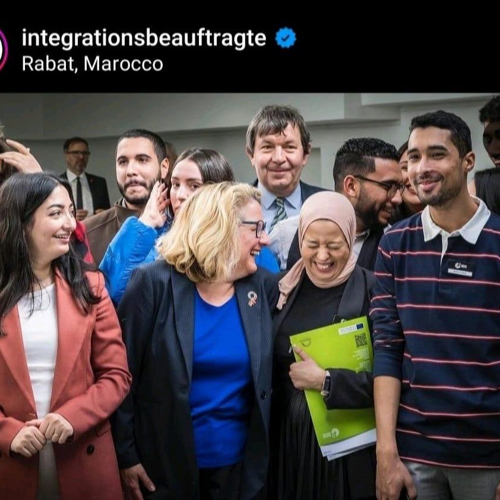

Mai 2026 – heute
Personalreferent / HR Coordinator · Rhenus Logistics
Betreuung von Stellenausschreibungen, Bewerbungsmanagement und HR-Prozessen mit SAP und Workday.
Zertifizierter SAP-S/4HANA-Materialwirtschaft-Experte mit einem Masterabschluss in Wirtschaftswissenschaften. Mein Schwerpunkt liegt auf Geschäftsprozessen, Unternehmenssoftware und digitaler Transformation.

Ich bin ein kaufmännischer Fachmann aus Bingen am Rhein mit Erfahrung in Personalwesen, internationaler Projektkoordination, Finanzen und Beschaffung. Ich verbinde einen wirtschaftswissenschaftlichen Masterabschluss mit praktischer Erfahrung in SAP und weiteren Unternehmenssystemen.
Betreuung von Stellenausschreibungen, Bewerbungsmanagement und HR-Prozessen mit SAP und Workday.
Projekt- und Finanzmanagement, Berichterstattung, SAP-Buchungen, Budgetplanung und -kontrolle, Beschaffung, Öffentlichkeitsarbeit und Veranstaltungsorganisation.
Masterabschluss mit Schwerpunkten Logistikmanagement, Beschaffung und Prozessoptimierung. Masterarbeit: „Optimierung der Beschaffungsprozesse“. ZAB-Anerkennung im Oktober 2024.
Zertifizierung im Bereich SAP-MM-Beratung mit Konfiguration, Stammdaten, Einkauf, Bestandsführung, Finanzintegration und Endanwender-Support.
Großes Deutsches Sprachdiplom – Deutschkenntnisse auf höchstem Niveau.
Sprachen: Arabisch (Muttersprache), Deutsch (C2), Französisch (verhandlungssicher) und Englisch (gute Kenntnisse).
Software: SAP MM, SAP FI/CO, Workday, Microsoft Office, LimeSurvey, Canva.
Zertifizierte Kenntnisse der Materialwirtschaft und betrieblicher Prozesse.
Masterabschluss in Wirtschaftswissenschaften und praktische kaufmännische Erfahrung.
Interesse an Prozessoptimierung, digitalen Werkzeugen und Unternehmenssoftware.
Ausgewählte Fotos von Seminaren, Veranstaltungen und beruflichen Begegnungen.




Du erreichst mich per E-Mail oder über meine beruflichen Netzwerke.